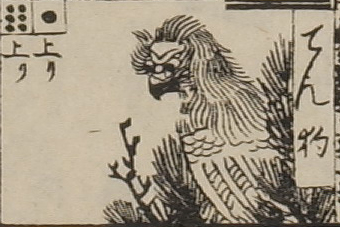

天狗；テング

天狗。目玉が大きく、嘴がついている。額にしわが寄り、前髪は逆立ち、後ろ髪は背に流れている。体は鷹のようである。松のような木の上にいる。
出典：親書誌：U426_nichibunken_0082：新版妖怪飛巡雙六；シンパンヨウカイトビマハリスゴロク／日付：2007／資源識別子：U426_nichibunken_0082_0028_0000
Copyright (c)2010- International Research Center for Japanese Studies, Kyoto, Japan. All rights reserved.